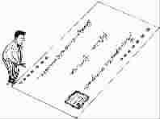

空信封
●刘华森
父亲过世后，我整理他的房间。
他生活俭朴，除了几个烟斗，没什么特殊物品。衣橱里有个小木箱，外表斑驳，但看起来似乎装着重要物品。
我小心翼翼地打开箱子，里面整整齐齐地放着一大沓旧信封，有一百多个。
信封都是空的，邮戳日期从1982年到1994年父亲逝世前几个月。随着时间流逝，寄信地址从台北换到台中，从台中变成土城，再从土城转到新竹，最后又回到台北。信封表面似曾相识，都是我的笔迹。那些信封都是我寄生活费给父亲用的。
父亲不愿离开他的田地，一直住在乡下。十几年前，他年事渐高，身体不再硬朗，我费尽唇舌才说服他把田地交给别人耕作。从那时起，我每月寄生活费给他。
我虽然不时回家探视父亲，但时间不定，唯恐有所延误，所以每月一领到薪水便立即给父亲寄出生活费，不敢怠慢。
父亲不识字，因此我不曾在信封里附上只言片语。他如此细心保存这些空信封，可见他对儿子的思念。对父亲来说，每个月定时寄到的信封，可能代表着他与儿子的联系吧！我看着这些空信封，百感交集。
如今这一百多个旧信封成了我的珍藏。不同的邮票透露了当时社会的脉动；不同的邮戳日期和寄信地址，记录了那十几年间我的人生浮沉。检视一个个信封，当年的心情跃然纸上。而现在信封里装着的，是我对父亲无限的思念。
(王晶摘自《海外星空》2006 年10月，杨志平图)